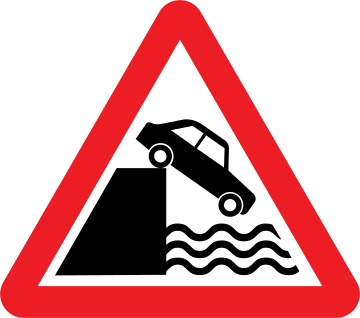

Loading...

Quayside or river bank
⚠ Warning Signs
📖 Description
Indicates that the road leads directly to an unprotected edge of a quay, river bank, or waterfront. Drivers must slow down and proceed with extreme caution, especially in poor visibility.